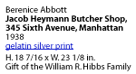

| 2 of 11 |

I wanted to photograph this subject because the signs’ shrieking blatancy literally cried out for a visual record. To my mind the faded, yellowing paper and the red paint were not particularly paintable. In black and white the signs shouted, clamored for attention, in visual anarchy. At the same time, the shrewd business sense which plastered them solid over the entire window area produced, as it were by chance, an esthetic by-product: the whole has homogeneity and variety of texture, simultaneously, which give the picture interest.
Berenice Abbott, New Guide to Better Photography, 1953
| 2 of 11 |